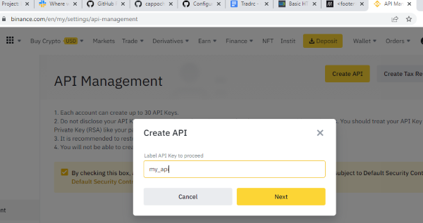
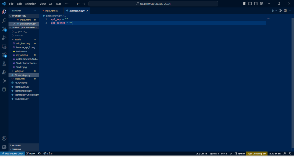
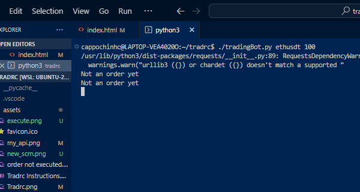

Tradrc
Your cryptocurrency trader on command
Obtain API keys from Binance.com

Add API keys to BinanceKeys.py file

Now execute the following example command:
./tradingBot.py ethusdt 100

Trade execution
Audio Instructions for Tradrc:
Download audio